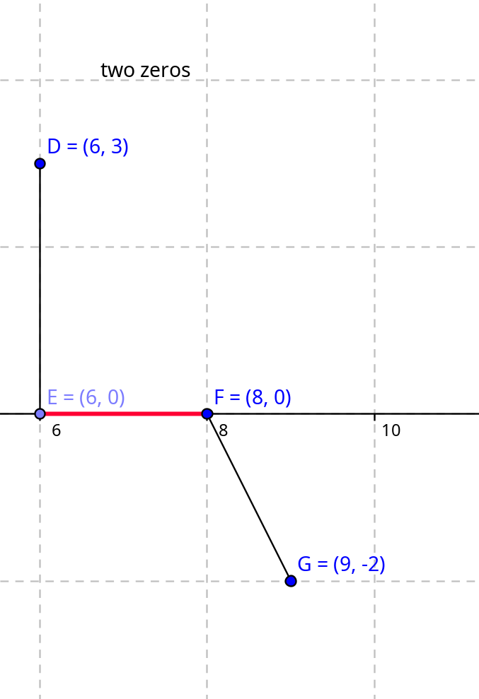

*** Used Chat gpt
Let f be a continuous function on the closed interval [a, b], and suppose that f(a) and f(b) have opposite signs; that is, f(a) × f(b) < 0. Then there exists at least one c in the open interval (a, b) such that f(c) = 0.
What if are there two zeros on ]a,b[ ?!
Start at interval [a,b], then consider interval [b,c], and so one, until determinate the number of roots of function. We do this by f(a) * f(b) < 0 there is a zero f(b) * f(c) <0 , another zero.
Examining f(x)f(a) * f(c) = zero. Either f(a), or f(c), or both are zeros.
How to calculate zeros of functionsmethod 1)
We put f(x) = 0. And then calculate the inverse function .
method 2)
as an example, having (x,0) (y coordinate is zero, meaning function will have a zero there), we use the following method